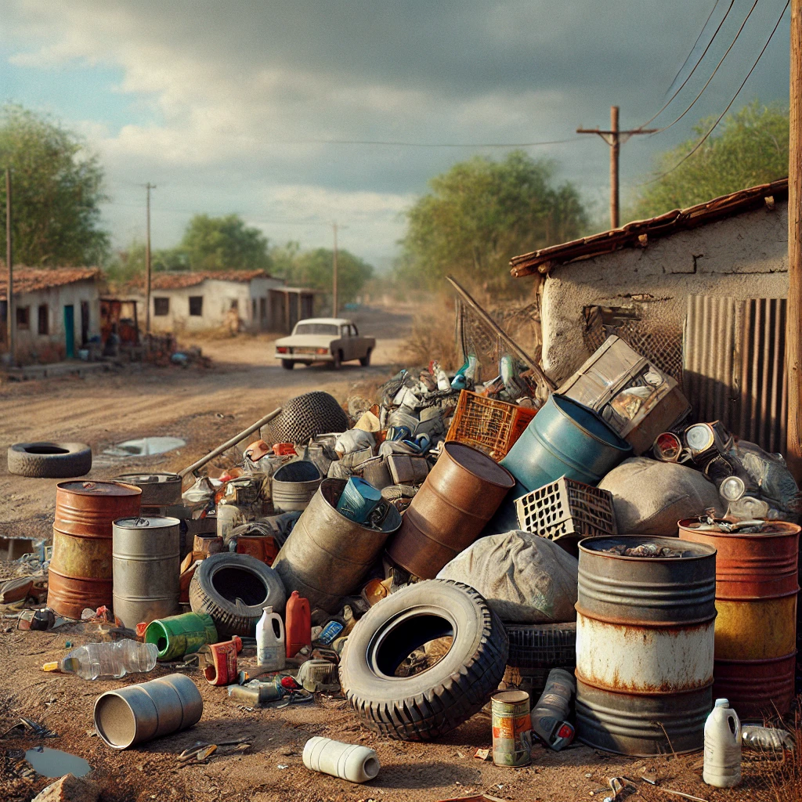

Módulo1/Aula1
Aspectos básicos da biologia, ecologia e controle de Aedes
Nas últimas décadas, as doenças transmitidas por artrópodes (arboviroses) estão presentes em mais de 100 países do mundo. Até o momento, são conhecidos mais de 500 arbovírus, dos quais, pelo menos, 150 são patogênicos ao homem. E, mais da metade destes arbovírus são transmitidos por mosquitos, em especial os do gênero Aedes, que são os vetores mais importantes na transmissão de diversas arboviroses, como Dengue, Chikungunya, Febre Amarela, Zika, Febre do Nilo Ocidental, diversas encefalites, entre outras (Charlier et al. 2017)
CURIOSIDADE
Os vírus da dengue, todos os quatro sorotipos (DENV-1, DENV-2, DENV-3 e DENV-4), os vírus Chikungunya e Zika estão circulando simultaneamente no continente americano desde 2013. Dentre todas essas arboviroses, você sabe identificar a diferença de sintomas entre elas? Veja!
A dengue, Zika e Chikungunya apresentam diversos sintomas e sinais clínicos semelhantes, que dificultam o diagnóstico inicial pelo profissional de saúde.
A Febre Amarela é a mais letal de todas, seguido da Dengue com sinais de alerta e a Dengue severa. A Chikungunya é a mais incapacitante e se caracteriza principalmente pelas dores articulares
Quanto à Zika, a transmissão de mãe a feto do vírus Zika (Síndrome Congênita do Zika), pode resultar em amplo espectro de malformações no feto, e até pode aumentar o risco de aborto espontâneo.
Atualmente, nos encontramos em um cenário de circulação simultânea de diversas arboviroses transmitidas pelo mesmo vetor urbano, o mosquito Aedes aegypti.

Falando mais um pouco do mosquito Aedes aegypti, ele se encontra em regiões tropicais e subtropicais, colonizando principalmente depósitos artificiais como tanques, barris, caixas d’água, pneus, recipientes descartáveis, vasos de flores, entre outros.
Aedes aegypti tem metamorfose completa, ou seja, seu ciclo de vida vai desde o ovo, passando por quatro estádios larvais, pupa e o adulto alado. As fêmeas de Aedes aegypti preferem se alimentar de sangue humano através da picada, dentro do domicílio e preferivelmente no amanhecer ou antes do crepúsculo, põem seus ovos grudados nas paredes internas dos depósitos com água, que podem sobreviver secos no ambiente por até um ano.
Você sabia que um ovo Aedes aegypti demora entre 7 e 10 dias para virar um mosquito adulto? Veja o seu ciclo de vida.
![Desenho que descreve o ciclo de vida do mosquito aedes aegypti, com informações ao lado de cada fase, começando a partir dos ovos, quando os ovos se encontram em meio aquoso ocorre o processo de incubação, que pode durar de alguns dias a meses, seguindo para larva, elas vivem na água e se convertem em pupas em apenas cinco dias, quando tornam-se pupas elas vivem na água e demoram dois dias para se transformarem em mosquitos adultos, por último tornam-se adultos, onde a fêmea deposita seus ovos em qualquer recipiente que contenha água, então o ciclo recomeça a partir dos ovos.](../assets/images/modulo1/aula1/img2.png)
Outra espécie de mosquito presente na região das Américas é o mosquito Aedes albopictus que tem hábitos similares, porém se alimenta de sangue de diversos animais, fora do domicílio e deposita ovos em diversos recipientes, tanto artificiais como naturais. Esta espécie pode se estabelecer em zonas temperadas e pode ser a ponte dos vírus que circulam no ambiente silvestre para o ambiente urbano.
CURIOSIDADE
Você já ouviu falar em “mosquito tigre asiático”?
Aedes albopictus também é conhecido como “mosquito tigre asiático”. Essa é uma espécie que vem do sudeste asiático, onde é vetor principal da dengue. Apesar de ter sido encontrado infectado naturalmente com vírus Dengue nas Américas, até agora, não tem sido incriminado em alguma epidemia da região.
A situação epidemiológica e entomológica no mundo, tem aumentado o risco de ocorrência de surtos de doenças emergentes e reemergentes e a velocidade de circulação delas, associadas principalmente aos determinantes e condicionantes da saúde, às desigualdades, às migrações e a alta mobilidade populacional nas últimas décadas.
Diante disso, como comentado anteriormente, apesar da recente inclusão da vacina para dengue (Qdenga e Butantan-DV) no calendário de vacinação, mas na ausência de vacinas disponíveis e de tratamento etiológico específico da maioria das arboviroses, que atinjam toda a população, a prevenção dessas doenças passa pelo controle vetorial efetivo, o qual exige estratégias integradas e multissetoriais alinhadas à participação comunitária. A vigilância oportuna e o diagnóstico laboratorial são fundamentais para identificar surtos e agir com estratégias de controle de forma oportuna e pertinente aos diferentes cenários.
SAIBA MAIS
Para mais informações sobre a biologia e seu papel na transmissão das diferentes arboviroses, assista ao vídeo “Conhecendo os mosquitos Aedes - transmissores de arbovírus”, criado pelo Instituto Oswaldo Cruz da FIOCRUZ.
Além disso, mais informações sobre a situação epidemiológica do seu município, consulte o sistema de alerta para arboviroses “InfoDengue”, criado pelo Programa de Computação Científica (Fundação Oswaldo Cruz, RJ) e da Escola de Matemática Aplicada (Fundação Getúlio Vargas)
História do controle de Aedes aegypti no Brasil
As primeiras populações de Aedes aegypti foram introduzidas nas Américas no período colonial no século XVI, possivelmente através dos barris de armazenamento de água presentes nos navios que traficavam escravos desde o continente africano. Em 1930 e 1940 se intensificaram campanhas de erradicação na América Latina pela Organização Pan-Americana da Saúde – OPAS e a Organização Mundial da Saúde – OMS, e Aedes aegypti chegou a ser erradicado no Brasil em 1955 e na mesma década em outros países da região, mas em 1976, sua presença foi novamente registrada no Brasil e o número de municípios infestados continuou crescendo. Atualmente, Aedes aegypti está presente em aproximadamente 95% dos municípios brasileiros.
Diante desse cenário, a luta contra o mosquito no Brasil foi fortalecida através de vários planos de erradicação do vetor desde 1990, como o Plano de Erradicação do Aedes aegypti (PEAa), coordenado pela Fundação Nacional de Saúde (FUNASA), e em 1996 com o Plano de Erradicação do Aedes aegypti (PEAa), que recomendava a atuação multissetorial e utilizou um modelo descentralizado com a participação das três esferas de governo.
Desde 2000, o Programa Nacional de Controle da Dengue (PNCD), voltado a ações de controle do mosquito, fez ênfase na melhoria da qualidade do trabalho de campo dos agentes, das condições sanitárias (coleta de lixo, saneamento básico, armazenamento de água) e a implementação de instrumentos legalizados para vistoria e eliminação de criadouros.
No Brasil, o principal objetivo dos programas de controle é reduzir as populações de insetos que transmitem agentes etiológicos, desse modo eliminando potenciais criadouros usando inseticidas ou larvicidas. Os Agentes Comunitários de Saúde (ACS) e Agentes de Combate às Endemias (ACE), juntamente com a população, são responsáveis por auxiliar esses programas de controle vetorial. As estratégias de controle vetorial são divididas principalmente no controle mecânico, que consiste no trabalho prático realizado pelos ACE e no controle químico, que consiste na aplicação de diferentes inseticidas para matar larvas, pupas e mosquitos Aedes.